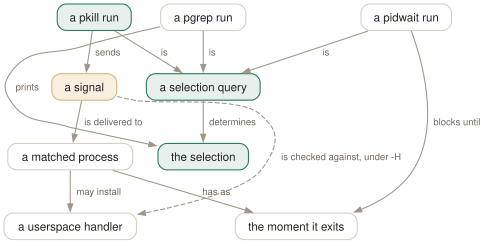

Day 07
Signal and wait
One query, three verbs — and only one of them is reversible.
By the end of today you can
- convert any pgrep query into a pkill without changing what it selects
- read pkill's exit status correctly when some targets could not be signalled
- wait for a process that is not your child, and know why
waitcannot
Three programs, one selection engine
pgrep, pkill and pidwait are the same binary's worth of logic wearing three names. Every criterion from the last six days works identically in all three — the pattern, -f, -u, -P, -O, all of it. What changes is the verb applied to the resulting set: list it, signal it, or block until it is gone.
This is the most useful safety property the tools have, and it deserves to become a reflex: write the pgrep, read the output, then change the word. The query is identical, so there is nothing left to get wrong.
$ pgrep -a -f 'python3 worker' # look first
4417 python3 worker.py --shard 1
4418 python3 worker.py --shard 2
$ pkill -e -f 'python3 worker' # then act
python3 killed (pid 4417)
python3 killed (pid 4418)

Which signal, and how to say so
The default is SIGTERM, the polite one: a process can catch it, flush its buffers and exit. Any other signal is named either way round, which is why pkill's synopsis has that odd bare -signal in it:
pkill -HUP syslogd- The short form. Anything the system knows as a signal name.
pkill -1 syslogd- The same thing, numerically.
pkill --signal HUP syslogd- The long form. The only one available in pgrep and pidwait.
In pgrep and pidwait --signal does nothing at all on its own — there is no signal to send. It is accepted so that it can be combined with -H, below, which is the one place a listing tool cares which signal you had in mind.
The signal worth knowing beyond TERM and KILL is 0. It is the null signal: every permission check runs and nothing is delivered. That makes it a pure probe — "could I signal this, if I wanted to?"
$ pkill --signal 0 -x systemd-journal
pkill: killing pid 832 failed: Operation not permitted
$ echo $?
1
Reading the exit status when it half worked
pkill's statuses are pgrep's, with one word changed in the definition of success: 0 requires that one or more processes were successfully signalled, not merely matched. That word does real work.
$ pkill --signal 0 -e -p 832,274951 # 832 is root's, 274951 is mine
pkill: killing pid 832 failed: Operation not permitted
killed (pid 274951)
$ echo $?
0
One failure, one success, exit 0. Had both been root's, the exit would have been 1 — the same status you get when nothing matched at all. A script cannot tell "no such process" from "not allowed" without reading stderr.
What pkill refuses to do
Three short options that pgrep accepts are rejected outright by pkill, and one that pkill accepts is rejected by pgrep:
pkill -v NAME -> pkill: invalid option -- 'v'
pkill -w NAME -> pkill: invalid option -- 'w'
pkill -d, NAME -> pkill: invalid option -- 'd'
pgrep -e NAME -> pgrep: invalid option -- 'e'
The long forms are a different matter. --inverse, --lightweight and --delimiter are all accepted by pkill and all take effect — only the one-letter spellings are blocked. The manual page mentions this for -v alone; the other two are undocumented in both directions.
-H: only the processes that are listening
A process that has not installed a handler for a signal gets the default action, which for most signals is death. -H restricts the selection to processes that have a userspace handler for the signal being sent — the ones that will do something deliberate with it rather than simply dying.
$ pkill -H --signal TERM -e -x lab7 # lab7 is /bin/sleep: no handler
$ echo $?
1
$ pgrep -x lab7
274964
It works in pgrep too, and that is arguably its best use — combined with --signal it answers "which of these would actually do something with a HUP, rather than dying?" before you send one:
$ pgrep --signal HUP -H -u $(id -u) -l
4864 gnome-keyring-d
5120 gnome-session-i
5476 gvfsd-fuse
5490 wireplumber
5602 dconf-service
pidwait: blocking on something you did not start
The shell's wait only works on your own children, because waitpid(2) will not report on a process you did not fork. pidwait has no such limit:
$ setsid sleep 5 & # reparented away; not our child
$ pidwait -e -x sleep
waiting for sleep (pid 274979)
$ echo $? # five seconds later
0
It does this with pidfd_open(2), which converts a PID into a file descriptor that becomes readable when the process dies. Two consequences: it needs Linux 5.3 or newer, and it is immune to PID reuse, because the descriptor is bound to that process rather than to the number.
The natural shape is a graceful shutdown that does not guess at a timeout:
pkill -TERM -f 'python3 worker' # ask
pidwait -f 'python3 worker' # wait, however long it takes
echo "all workers stopped"
Today's habit
Never type pkill first. Type pgrep -a, look at what comes back, then press up-arrow and change five characters. It takes two seconds and it is the only defence against a pattern that was one character wider than you thought.
Tomorrow: the criteria that know about containers, which is how you tell two identical-looking processes apart when the name, the user and the command line are all the same.
# Day 7: graceful stop. The pgrep on the first line is the safety check;
# the pkill below it is the same query with one word changed.
# pgrep -a -f 'python3 worker'
pkill -e -TERM -f 'python3 worker'
pidwait -f 'python3 worker'
New vocabulary
Commands
| Command | Does |
|---|---|
pkill -e -f 'python3 worker' | Signal every match and say which ones. SIGTERM by default. |
pkill -HUP syslogd | The man page's own example: make a daemon reread its configuration. |
pkill --signal 0 -e -x myapp | Send nothing. A pure permission probe — but -e still says "killed". |
pidwait -e -x myapp | Block until every match has exited, including processes you did not start. |
Options
| Option | Does |
|---|---|
--signal SIG, -SIG | Which signal to send. Name or number. Default SIGTERM. |
-e, --echo | Print a line per process signalled. Says "killed" whatever the signal was. |
-q, --queue N | Use sigqueue(3) and attach this integer to the signal. |
-H, --require-handler | Only signal processes that have a userspace handler for that signal. |
-m, --mrelease | Release the target's memory immediately after signalling. Undocumented. |
Drillsdo these in a real terminal, today
Self-check
Answer out loud first, then unfold.
A cleanup script runs pkill -f worker and reports success, but half the workers are still running afterwards. The log shows exit status 0. Is that a bug in pkill?
No. Exit 0 from pkill means "at least one process was successfully signalled", not "all of them were". A run in which one worker was yours and the rest belonged to another user gives you Operation not permitted on stderr for each failure and exit 0 overall, because one of them worked.
Exit 1 arrives only when nothing was signalled — either nothing matched, or everything that matched was forbidden. The two cases are indistinguishable from the status alone, which is why -e and a look at stderr belong in any script that cares.
You run pkill --signal 0 -e -x myapp to check permissions. It prints myapp killed (pid 4417). Did you just kill it?
No. Signal 0 is the null signal: the kernel performs every permission check and delivers nothing. The process is untouched — pgrep -x myapp immediately afterwards still finds it.
-e prints the word "killed" unconditionally, whatever signal was sent. It is describing the match, not the outcome, and it does not consult the signal number at all. Read it as "selected" and the flag becomes useful again.
pkill -v nginx is refused as an invalid option, but pkill --inverse nginx runs. What is being protected against, and what is not?
A typo. pkill -v nginx would signal everything that is not nginx, which on a normal machine is every process you own — and -v is one slip away from -x or -u on the keyboard. The manual page says the short option is disabled "to avoid accidental usage".
What is not protected against is anyone who means it. The long form is accepted and works, on the theory that nine deliberate characters are not a slip. The same is true of --lightweight and --delimiter, whose short forms are refused too — and that pair is undocumented, since pgrep(1) only mentions the -v case.
--lightweight genuinely changes the target set rather than being accepted and ignored: on a process with seven threads, pkill --signal 0 -c -f udisksd counts 3 where pkill --lightweight --signal 0 -c -f udisksd counts 9. Signalling threads is a real operation and pkill will do it if you insist in full.
What can pidwait do that the shell's built-in wait cannot, and what does it need from the kernel to do it?
wait only works on your own children — it is a wrapper around waitpid(2), and the kernel will not report the exit of a process you did not fork. pidwait waits on anything: a daemon started by systemd, another user's job, a process whose parent is init.
It does that with pidfd_open(2), which turns a PID into a file descriptor that becomes readable when the process dies. That syscall arrived in Linux 5.3, so pidwait simply does not work on anything older — the manual page lists this under BUGS. It also closes the PID-reuse race, because the descriptor refers to that specific process and not to whatever later inherits the number.
Cheat sheet
pgrep -a QUERY # look
pkill -e QUERY # then act - IDENTICAL query, SIGTERM by default
pidwait QUERY # or block until every match has exited
#
pkill -HUP x / pkill -1 x / pkill --signal HUP x # all the same
pkill --signal 0 -x app # probe permissions, deliver nothing
pkill -H --signal HUP x # only processes with a real handler for it
#
# exit 0 = at least ONE was signalled. 1 = none were - which covers both
# 'nothing matched' and 'all forbidden'. Read stderr to tell them apart.
# -e always says 'killed', even for signal 0. It means 'selected'.
# -c counts MATCHES, not kills. pgrep rejects -e.
# pkill rejects SHORT -v -w -d, but --inverse/--lightweight/--delimiter all work.
Everything through Day 07
Commands
| Command | Does |
|---|---|
pgrep sshd | List the PID of every process whose name matches the ERE sshd. |
pgrep -u root sshd | Two criteria, AND-ed: owned by root and named sshd. |
pgrep -u root,daemon | One criterion, OR-ed: owned by root or by daemon. No pattern at all. |
pgrep 'systemd|cron' | One ERE, two alternatives. Two bare patterns would be an error. |
pgrep --version | Print the procps-ng version this course is checked against. |
pgrep -f 'python3 .*worker' | Match the full command line, so the interpreter's arguments count. |
pgrep -x systemd | Only processes named exactly systemd — not systemd-logind. |
pgrep -A -f myscript.sh | Match command lines, but ignore every ancestor of this pgrep. |
cat /proc/PID/comm | The 15-character name pgrep matches by default. |
tr '\0' ' ' < /proc/PID/cmdline | The full command line pgrep matches under -f. |
ps -fp $(pgrep -d, -x sshd) | The man page's own idiom: hand a comma list to ps. |
renice +4 $(pgrep chrome) | Word-splitting turns newline-separated PIDs into separate arguments. |
pgrep -a -Q -f worker | List command lines with argument boundaries preserved. |
pgrep -P $$ | Everything your current shell forked directly. |
pgrep -t pts/3 -a | Everything running on one terminal — the other window. |
pgrep -g 0 | Processes in pgrep's own process group; -s 0 does the same for the session. |
pgrep -n -a firefox | The most recently started match, with its command line. |
pgrep -O 3600 -u $USER -a | Everything of yours that has been running for over an hour. |
pgrep -r D -a | Processes in uninterruptible sleep — the ones a dying disk produces. |
ls /proc/PID/task | Every thread of a process, by TID. |
cat /proc/PID/task/TID/comm | One thread's own name — often nothing like the process's. |
pgrep -w -f nginx | All threads of every matching process, since threads share the command line. |
pkill -e -f 'python3 worker' | Signal every match and say which ones. SIGTERM by default. |
pkill -HUP syslogd | The man page's own example: make a daemon reread its configuration. |
pkill --signal 0 -e -x myapp | Send nothing. A pure permission probe — but -e still says "killed". |
pidwait -e -x myapp | Block until every match has exited, including processes you did not start. |
Options
| Option | Does |
|---|---|
-c, --count | Print how many processes matched instead of their PIDs. |
--quiet | Print nothing; the exit status is the whole answer. Long form only. |
-f, --full | Match against the whole command line instead of the process name. |
-x, --exact | Require the pattern to match the whole string, not a part of it. |
-i, --ignore-case | Match case-insensitively. |
-A, --ignore-ancestors | Drop every ancestor of this pgrep from the result. The fix for -f in scripts. |
-l, --list-name | Print the process name after the PID. Still the 15-character name, even under -f. |
-a, --list-full | Print the full command line after the PID. |
-Q, --shell-quote | Shell-quote each argument in -a output, so boundaries survive. Undocumented. |
-d, --delimiter | Join the PIDs with this string instead of a newline. A trailing newline is still added. |
-u, --euid | Match on the effective user — the authority the process is acting with. |
-U, --uid | Match on the real user — who started it. |
-G, --group | Match on the real group. Name or number. |
-P, --parent | Match processes whose parent is one of these PIDs. |
-g, --pgroup | Match on process group. 0 means pgrep's own. |
-s, --session | Match on session ID. 0 means pgrep's own. |
-t, --terminal | Match on controlling terminal, named without /dev/. |
-p, --pid | Match only these PIDs — a filter, not a lookup. Undocumented. |
-n, --newest | Keep only the most recently started match. |
-o, --oldest | Keep only the least recently started match. |
-O, --older | Keep matches started more than this many seconds ago. |
-r, --runstates | Keep matches in one of these kernel run states. A comma list. |
-v, --inverse | Return everything the query did not select — the whole query, not just the pattern. |
-w, --lightweight | Walk threads rather than processes: match every thread's own name, and print TIDs. |
-F, --pidfile | Read PIDs from a file and use them as a criterion. |
-L, --logpidfile | With -F, fail unless the pidfile is locked. |
--signal SIG, -SIG | Which signal to send. Name or number. Default SIGTERM. |
-e, --echo | Print a line per process signalled. Says "killed" whatever the signal was. |
-q, --queue N | Use sigqueue(3) and attach this integer to the signal. |
-H, --require-handler | Only signal processes that have a userspace handler for that signal. |
-m, --mrelease | Release the target's memory immediately after signalling. Undocumented. |